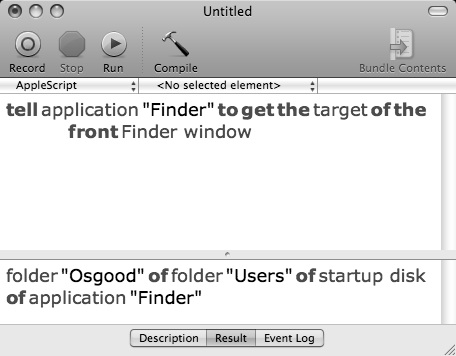
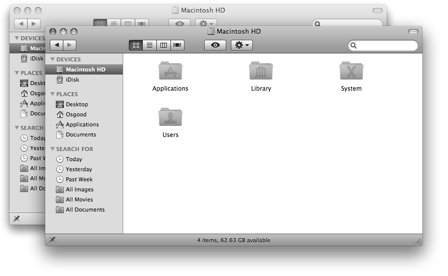
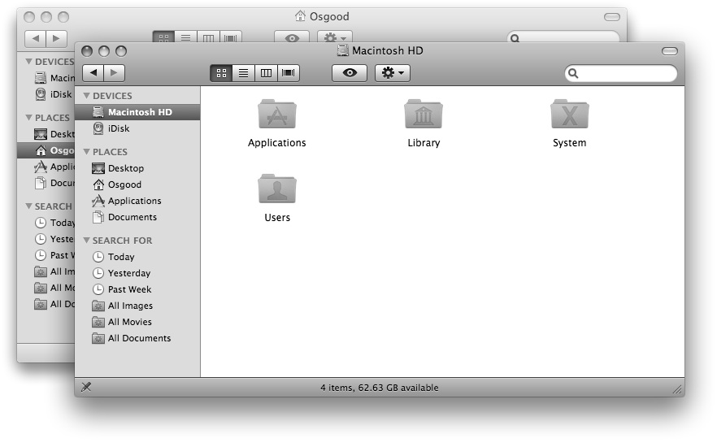
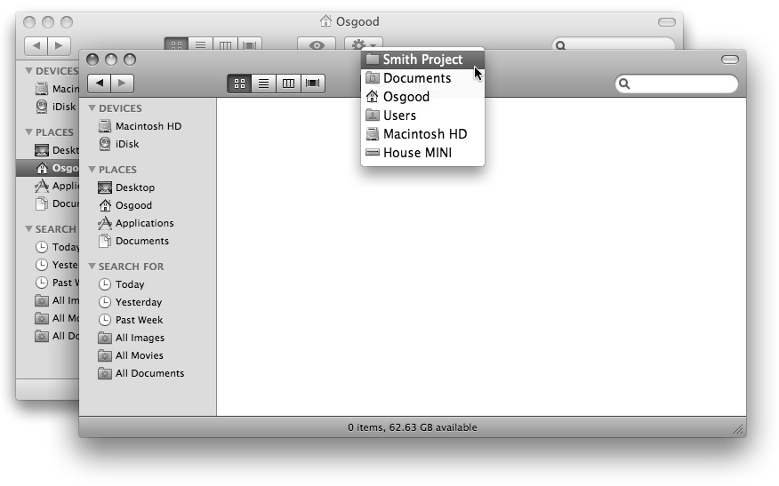

The Target Property
The value of the target property is a reference to the folder or disk whose contents are displayed in the Finder window. This value can be both read and changed. Let's examine both actions.
First, let’s get the value of the target property of the frontmost window: The value of the target property of a Finder window is a reference to the folder whose contents are displayed in that window.
The value of the target property of a Finder window is a reference to the folder whose contents are displayed in that window.
tell application "Finder" to get the target of the front window
--> returns: folder <name of your home directory> of folder "Users" of startup disk of application "Finder"
{kind=link}

A script getting the value of the target property of a Finder window.
As you can see, the result of this script is a reference to the folder whose contents are displayed in the Finder window, in this case your home directory. This reference describes the target folder in terms of its position in its object hierarchy or where it is in its “Chain of Command.”
The returned object reference clearly shows, through the use of the possessive “of,” that the target folder is contained by the “Users” folder which is on the startup disk which is an element of the Finder application. You’ll use this hierarchical reference structure often in the scripts you write.
Next, we’ll change the targets of the open Finder windows. To change the value of a property, we’ll use the verb “set” in our scripts. Set is the verb or command used to change the value of a property.
Delete the previous script from the script window, then enter, compile, and run the following script:
 Changing the value of a Finder window’s target property will change the contents displayed in the window.
Changing the value of a Finder window’s target property will change the contents displayed in the window.
tell application "Finder" to ¬
set the target of the front Finder window to the startup disk
You’ll notice that the frontmost Finder window now displays the contents of the startup disk:
{kind=link}

The frontmost Finder window now displays the contents of the startup disk.
Now try this script:
 A script to set the target of the last Finder window.
A script to set the target of the last Finder window.
tell application "Finder" to ¬
set the target of the last Finder window to home
The second Finder window now displays the contents of your home directory:
{kind=link}

The rear Finder window now displays the contents of the home directory.
In summary, the target property of a Finder window has a value that is a reference to a specific folder or disk whose contents are displayed within the Finder window. This value can be changed by using the verb “set” in conjunction with a reference to a new target folder. A reference describes an object in terms of its position in its object hierarchy, or in the case of a folder object, where it is on its parent disk.
Finder References
Since you'll often use object references in the scripts you write, here's a short overview of how to create an object reference for use with the Finder application.
First, in the front Finder window, navigate to your Documents folder in your Home directory. In the Documents folder, create a new folder named “Smith Project.” We’ll use this folder in the following examples.
To construct an object reference to a specific Finder disk item, simply start with the item to be referenced and list each folder or containing item of the object hierarchy until you've reached the disk containing the item.
For example, to create a Finder reference to the folder named “Smith Project” in the Documents folder in your Home directory, begin the Finder reference with the name of the referenced item preceded by a class identifier indicating the type of item it is, such as a “folder” or “document file.”
folder "Smith Project"
Next, you add the class identifier and name of the previous object’s parent or containing folder or object, preceded with the possessive “of” to indicate its ownership of the previous item.
folder "Smith Project" of folder "Documents"
Again, add the class identifier and name of the previous object’s parent or containing folder or object, preceded with the possessive “of” to indicate ownership.
folder "Smith Project" of folder "Documents" of ¬
folder <name of your home directory>
This process will continue until we’ve reached the disk containing the referenced object:
folder "Smith Project" of folder "Documents" of ¬
folder <name of your home directory> of ¬
folder "Users" of disk "Macintosh HD"
Note the use of the class identifier “disk” for the disk object.
You’ve now constructed an object reference to the Finder item “Smith Project” located in the Documents folder in your Home directory.
Object references to Finder items can sometimes be very long. To shorten our example reference, and make it more generic and eaiser to write, we can optionally replace the section of the reference pertaining to your Home directory and it’s parent containers with the special Finder term “home,” mentioned earlier in this chapter:
folder "Smith Project" of folder "Documents" of home
This shorten version will function exactly as the longer reference.
If we wanted to use this object reference as the value for the target property, the script would be this:
tell application "Finder" to set the target of ¬
the front Finder window to folder "Smith Project" of ¬
folder "Documents" of home
Of course, this script will not work if there is no folder named “Smith Project” in the referenced location.
TIP: To view the object heirarchy of a Finder disk item, click on the title in its Finder window or its parent Finder window while holding down the Command key. Each segment in the object heirarchy will be listed on the popup menu.
{kind=link}

Before we continue our tutorial, let’s reset the front Finder window back to displaying the contents of the startup disk by running this script:
 A script to make the frontmost Finder window display the contents of the startup disk.
A script to make the frontmost Finder window display the contents of the startup disk.
tell application "Finder" to set the target of ¬
the front Finder window to the startup disk
Quick Summary
That's a short explanation and demonstration of Finder disk item references. This topic is covered in great detail in a later chapter. For now, it is enough to understand that:
Scriptable objects are referenced by describing their object hierarchy or “Chain of Command.”
Now, let’s continue our overview of the properties of a Finder window.